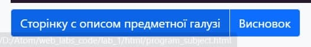
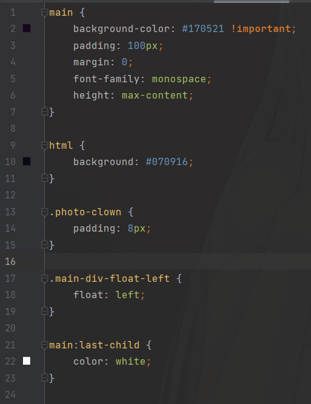
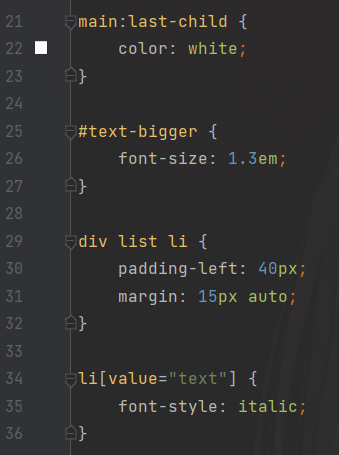
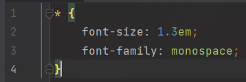
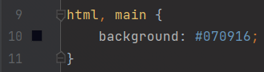
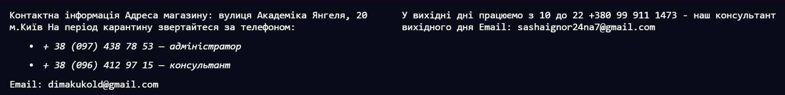
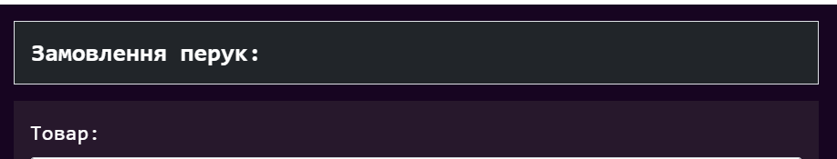
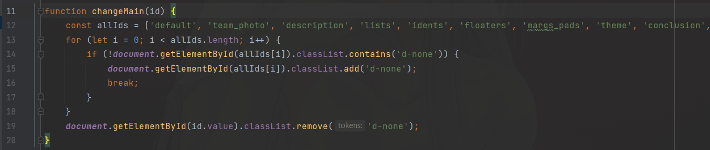
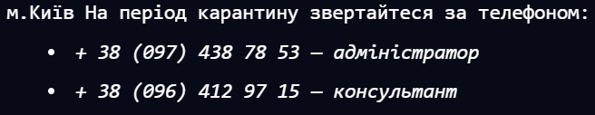

Міністерство освіти і науки України
Національний технічний університет України
“Київський політехнічний інститут імені Ігоря Сікорського”
Факультет інформатики та обчислювальної техніки
Кафедра автоматики та управління в технічних системах
Лабаратаорна робота № 2
На тему: Каскадні таблиці стилів. Селектори. Ідентифікатори. Стильове оформлення текстових
елементів в html-документах.
Виконали: Гнітій Є.,
Терещенко Д., Дронь О.,
Телесненко І.
Перевірила: Проскура С. Л.
Київ 2021
Постановка задачі Лабораторної роботи № 2:
Дана лабораторна робота орієнтована на засвоєння теоретичного матеріалу, такого як основна теорія
каскадних таблиць стилів, селекторів, ідентифікаторів, стильового оформлення текстових елементів в
HTML-документах. За мету ставиться застосування теоретичних знань на практиці, методом використання
різних селекторів та ідентифікаторів для удосконалення HTML-коду головної сторінки WEB-застосунку
відповідно раніше обраної тематики.
Тема, мета лабараторної роботи, github:
Тема: каскадні таблиці стилів. Селектори. Ідентифікатори. Стильове оформлення текстових
елементів в html-документах.
Мета: придбати практичні навички роботи з селекторами,ідентифікаторами, списками,
різноманітними властивостями кольору і фону, зовнішними та внутрішними відступами, плаваючими
елементами, оформленням текстових елементів.
Висновки:
У ході даної лабораторної роботі ми нагадали основну теорію каскадних таблиць стилів, селекторів,
ідентифікаторів, стильового оформлення текстових елементів в HTML-документах. Ми придбали практичні
навички роботи з селекторами, ідентифікаторами, списками, різноманітними властивостями кольору і
фону, зовнішними та внутрішними відступами, плаваючими елементами, оформленням текстових елементів.
Ці селектори та ідентифікатори ми використали для удосконалення HTML-коду головної сторінки
WEB-застосунку відповідно раніше обраної тематики. Запустили даний документ у браузері для перевірки
та переконалися, що все працює коректно.
HTML-код посилання

<div class="btn-group">
<a href="program_subject.html" class="btn btn-primary border mt-2">Cторінку с описом предметної галузі</a>
<a href="D:\Atom\WEB_labs\html\lab-1.html" class="btn btn-primary border mt-2">Висновок</a>
</div>
Для створення посилання необхідно повідомити браузеру, що є посиланням, а також вказати адресу
документа, на який слід зробити посилання. Обидві дії виконуються за допомогою тега <a>.
<a href="URL"> текст посилання </a>
Атрибут href визначає URL (Universal Resource Locator, універсальний покажчик ресурсу), іншими
словами, адресу документа, на який слід перейти, а вміст контейнера <a> є посиланням. Текст,
розташований між тегами <a> і
</a>, за замовчуванням стає синього кольору і підкреслюється.
Фото гарних людей:
Селектори тегу і класу:

main {
background-color: #170521 !important;
padding: 100px;
margin: 0;
font-family: monospace;
height: max-content;
}
html {
background: #070916;
}
.photo-clown {
padding: 8px;
}
.main-div-float-left {
float: left;
}
main:last-child {
color: white;
}
В ролі селектора може виступати будь-який тег HTML, для якого визначаються правила форматування,
такі як: колір, фон, розмір і т. Д. Правила задаються в наступному вигляді.
Тег {властивість1: значення; властивість2: значення; ...}
Спочатку вказується ім'я тега, оформлення якого буде перевизначеним. Усередині фігурних дужок
пишеться стильова властивість, а після двокрапки - його значення.
Селектори класу використовуються для визначення стилів для кількох елементів одного типу,
розміщених у різних частинах або на різних сторінках веб-сайту. Для створення заголовка класу
headline необхідно додати атрибут class з відповідним значенням в відкриваючий тег h1. Далі
необхідно задати стиль для зазначеного класу. Даний стиль оформлення можна застосувати і для
інших елементів.
Інші селектори


main:last-child {
color: white;
}
#text-bigger {
font-size: 1.3em;
}
div list li {
padding-left: 40px;
margin: 15px auto;
}
li[value="text"] {
font-style: italic;
}
* {
font-size: 1.3em;
font-family: monospace;
}
Універсальний селектор відповідає будь-якому елементу, наприклад, наступний запис обнулить відступи
для всіх елементів веб-сайту:
* {Margin: 0;}
Селектор Ідентифікатора
Селектори ідентифікатора використовуються для привласнення стилю одному конкретному елементу.
Ідентифікатор id елемента можна використовувати в документі лише один раз, оскільки він виділяє
унікальний елемент.
Імена класів можуть складатися з латинських символів, цифр і знаків - і _. Ім'я класу має починатися
з літери.
Селектори атрибута
Ці селектори уможливлюють вибір елемента, заснований тільки на наявності атрибута (наприклад, href)
або на всіляких різного роду поєднаннях зі значенням атрибута.
Сусідні і дочірні селектори
Сусідніми називаються елементи веб-сторінки, коли вони йдуть безпосередньо один за одним в коді
документа. Дочірнім називається елемент, який безпосередньо розташовується всередині батьківського
елементу.
Групування селекторів

html, main {
background: #070916;
}
Коли ви групуєте селектори CSS, ви застосовуєте однакові стилі до декількох різних елементів, не
повторюючи стилів у вашій таблиці стилів.
Щоб групувати CSS-селектори на аркуші стилів, ви використовуєте коми для розділення кількох
згрупованих селекторів у стилі.
Приклад: div, p {color: # f00; }
Кома означає "і", тому цей селектор застосовується до всіх елементів абзацу та всіх елементів
поділу. Якщо кома відсутня, селектор замість цього застосовується до всіх елементів абзацу, які є
дочірнім поділом.
Будь-яка форма селектора може бути згрупована з будь-яким іншим селектором.
Ви можете згрупувати будь-яку кількість селекторів, включаючи селектори, що представляють собою
окремі слова та сполучники.
Будь-який дійсний селектор може бути розміщений у групі, і всі елементи в документі, які
відповідають усім згрупованим елементам, матимуть однаковий стиль на основі цього властивості стилю.
Плаваючі елементи

.main-div-float-left {
float: left;
}
Плаваючими будемо називати такі елементи, які обтікають по контуру іншими об'єктами веб-сторінки,
так і з текстом.
Плаваючі елементи досить активно застосовуються при верстці веб-сторінок і служать для реалізації
цих і не тільки завдань:
• обтікання картинок текстом;
• створення врізки;
• горизонтальні меню;
• колонки.
Обтікання відбувається за допомогою стильової властивості float із значенням left або right. За
замовчуванням обтікання для елементів не встановлюється, але якщо це з яких-небудь причин необхідно
вказати явно, слід використовувати значення none.
Відступи:

main {
background-color: #170521 !important;
padding: 100px;
margin: 0;
font-family: monospace;
height: max-content;
}
Відступ - відхилення від краю колонки однієї або декількох рядків, що йдуть підряд.
Види відступів:
• margin-bottom - встановлює величину відступу від нижнього краю елемента.
• margin-left - встановлює величину відступу від лівого краю елемента.
• margin-right - встановлює величину відступу від правого краю елемента.
• margin-top - встановлює величину відступу від верхнього краю елемента.
• margin - встановлює величину відступу від кожного краю елемента.
Ідентифікатори:

#text-bigger {
font-size: 1.3em;
}
Ідентифікатор (званий також «ID селектор») визначає унікальне ім'я елемента, яке використовується
для зміни його стилю і звернення до нього через скрипти.
Синтаксис застосування ідентифікатора наступний.
# Ім'я ідентифікатора {властивість1: значення; властивість2: значення; ...}
При описі ідентифікатора спочатку вказується символ решітки (#), потім йде ім'я ідентифікатора. Воно
повинно починатися з латинської символу і може містити в собі символ дефіса (-) і підкреслення (_).
Використання російських букв в іменах ідентифікатора неприпустимо. На відміну від класів
ідентифікатори повинні бути унікальні, іншими словами, зустрічатися в коді документа лише один раз.
Звернення до ідентифікатора відбувається аналогічно класам, але в якості ключового слова у тега
використовується атрибут id, значенням якого виступає ім'я ідентифікатора. Символ решітки при цьому
вже не вказується.
Списки:

<list>
<li value="text">
+ 38 (097) 438 78 53 — адміністратор
</li>
<li value="text">+ 38 (096) 412 97 15 — консультант</li>
</list>
Списком називається взаємо пов'язаний набір окремих фраз чи речень. Списки надають можливість
упорядкувати та систематизувати різні данні та представити їх в наочному і зручному для користувача
вигляді.
Списки бувають:
• маркировані: контейнер <ul> та пункт списку починається з тега <li>
• нумеровні: контейнер <ol> та пункт списку починається з тега <li>
• список визначень: контейнер <dl>, термін <dt>